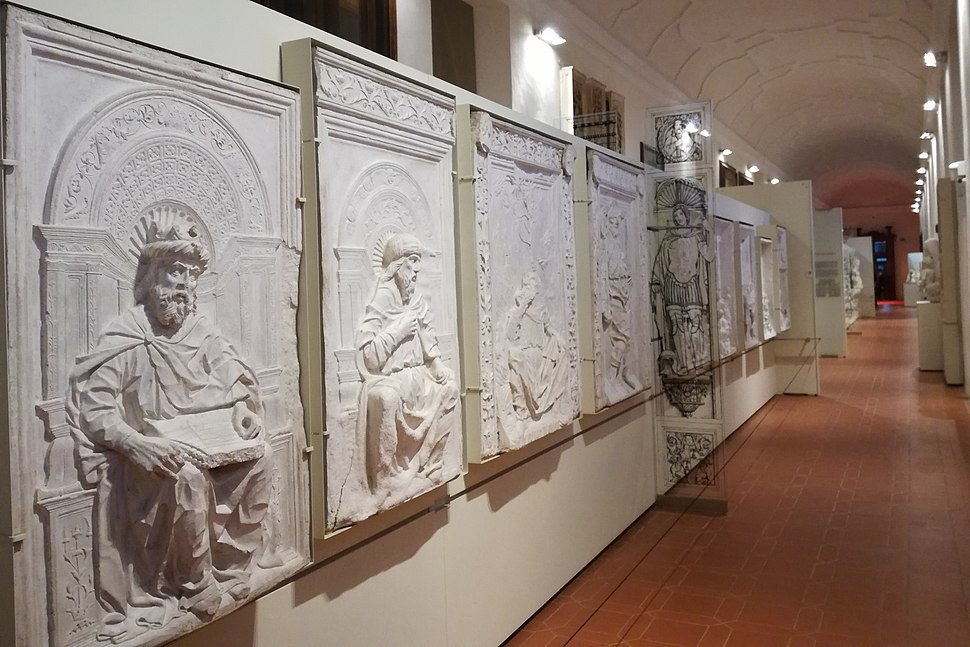
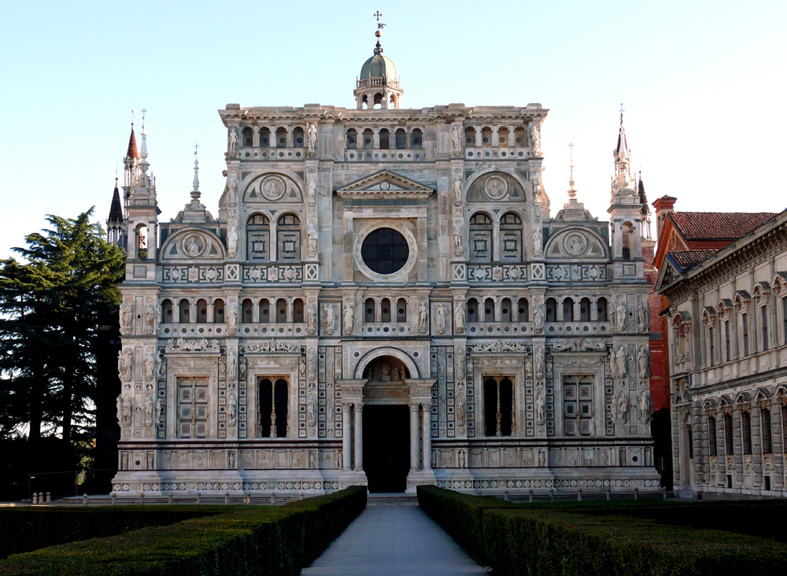

The Museum

The Museo della Certosa is part of the complex of the charterhouse of Pavia and holds most of the movable artistic propriety of the ecclesiastic institution. It is hosted in the Palazzo Ducale, baroque addition to the complex and prospicient to the forecourt. The museum was constituted at the end of the 19th century thanks to the involvement of local academics and government officials. In 1888 Adolfo Venturi, recently nominated Inspector of Museums and Galleries of the Italian Kingdom, surveyed the Certosa to assess the possibility to establish there a museum. Even if the advice of Venturi was negative, a first nucleus was created in 1892 with a small selection of objects arranged by Cesare Rigoni, local scholar and new curator of the complex. In the same year the collection of plaster casts was constituted with a donation by the caster Edoardo Pierotti. In the first decade of the 20th century, the halls of the Palazzo Ducale were restored, and two floors were arranged to host the growing collection. In the following century, there were only partial rearrangements: the display at present is rather faithful to the original one.
The Certosa

In the past the charterhouse, according to the practices of the Carthusian order, was isolated in the countryside and was vastly self-sufficient, hosting a church, chambers for monks, halls for community needs as the refectory, productive areas. However, at first glance it is evident how the complex is not only functional but also richly decorated, and this thanks to the patronage of Gian Galeazzo Visconti, duke of Milan, who wanted to establish there the burial ground for him and his successors. However, the project was mostly completed only during the late 15th century with the Sforza family, successors to the Visconti in the duchy. The works on the church were still ongoing when the Sforza declined, and later restoration are evident in the not organic iconographic program. In 1620 it began also the construction of the Palazzo Ducale, adjoining the ecclesiastic buildings.
As the name of the complex recalls, in the origin the monastery was built to host a Carthusian community, who lived there for almost three centuries until the suppression the order, disposed by Napoleonic decree in 1798. In the following years, as in many other cases, the Certosa underwent destructions and abandonment, determining also an important dispersal of the artistic patrimony. In the climate of the Restoration, Carthusians came back to the Certosa in 1843, but a few decades later, with the annexation to the Piedmontese (later Italian) kingdom, the management of the complex passed to the Ministry of public education. In 1932 the state favoured the return of Carthusians in the establishment, but the order renounced in 1947 in favour of the Discalced Carmelits; from 1962 the Certosa hosted Cistercian monks who were responsible for the keeping and care of the building. From the 1st of January 2026, the administration of the establishment passed on directly to the Ministry of Culture.